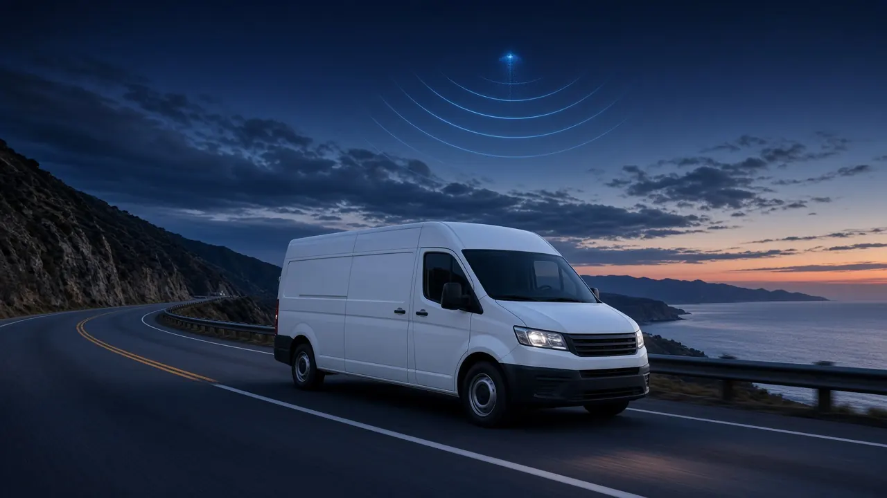
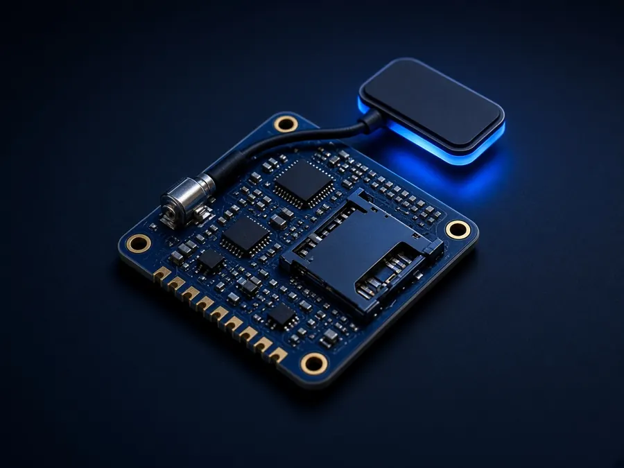

Rastreamento veicular
Posição ao vivo, trilha do dia, rotas habituais e aviso quando algo foge do padrão.

Rastreamento veicular, medição em campo e alertas inteligentes numa só plataforma, com conectividade Cat-M e cobertura total por satélite.
Sem senha: entre com sua conta Google ou receba um código por e-mail.
Uma plataforma, quatro frentes da sua operação.
Posição ao vivo, trilha do dia, rotas habituais e aviso quando algo foge do padrão.

Leituras de medidores em campo, tendência e alerta de consumo fora do normal.

Uso por chip e por período, com projeção do mês e exportação.

Módulo compacto que usa a rede celular e passa para o satélite quando ela some.
Equipamento com chip Cat-M, testado no seu local.
Pela rede celular ou por satélite, sem intervenção.
Painéis, alertas e relatórios no celular ou no computador.
Dados de exemploCelular onde há sinal, satélite onde não há.
Bateria e sinal acompanhados todos os dias.
Login sem senha e cada pessoa vê só o que pode.
Firmware e plataforma próprios, ajustados à operação.
Vê todos os painéis com dados reais, exporta relatórios e gerencia quem tem acesso.
Acompanha a demonstração do relatório, sem exportar e sem dados reais.
Entre com sua conta Google ou receba um código por e-mail. Sem senha para lembrar.